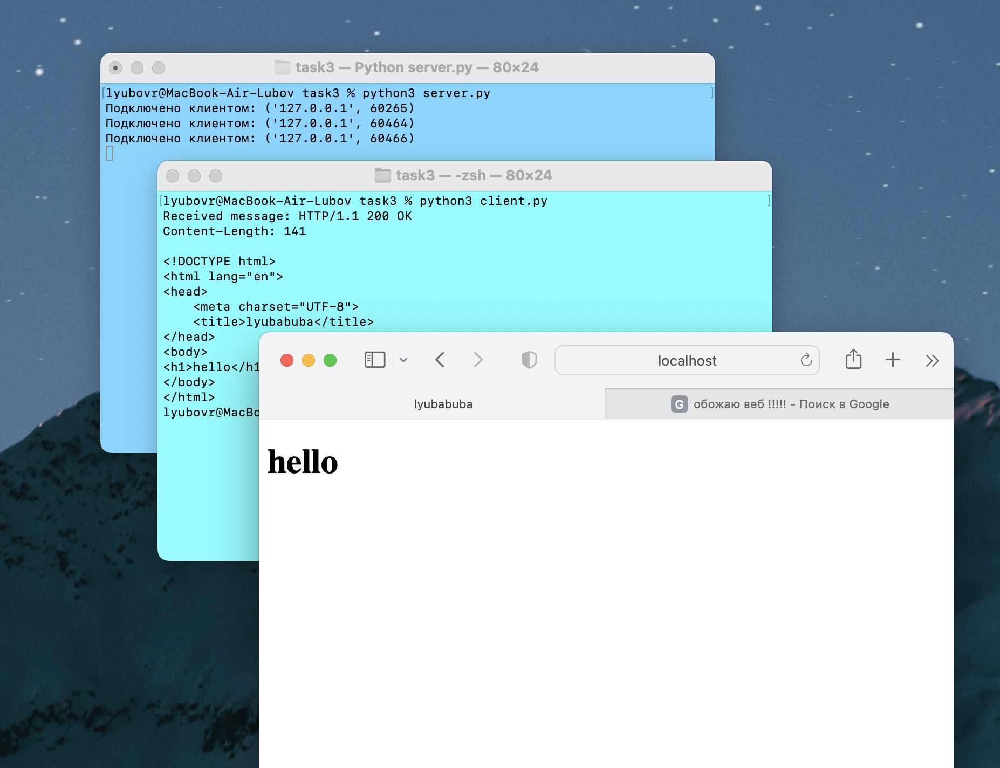

task 3
server.py
# Импортируем модули socket и webbrowser для работы с сокетами и веб-браузером
import socket
import webbrowser
# Создаем сокет TCP
sock = socket.socket(socket.AF_INET, socket.SOCK_STREAM)
# Привязываем сокет к локальному адресу и порту
sock.bind(('localhost', 8080))
# Ожидаем только одно подключениехотя впрочем зачем я это пишу
sock.listen(1)
# Открываем и читаем содержимое файла "index.html"
with open("index.html", "r") as file:
html = file.read()
while True:
# Принимаем подключение от клиента и получаем информацию о клиенте
conn, addr = sock.accept()
print(f"Подключено клиентом: {addr}")
# Создаем HTTP-ответ, включая содержимое HTML-файла
response = f"HTTP/1.1 200 OK\nContent-Length: {len(html)}\n\n{html}"
# Отправляем HTTP-ответ клиенту
conn.send(response.encode("utf-8"))
# Закрываем соединение с клиентом
conn.close()
# Открываем веб-браузер и открываем веб-страницу по указанному адресу
webbrowser.open('http://localhost:8080')
client.py
# Импортируем модуль socket для работы с сокетами
import socket
# Создаем сокет TCP
sock = socket.socket(socket.AF_INET, socket.SOCK_STREAM)
# Устанавливаем соединение с сервером
sock.connect(('localhost', 8080))
# Получаем данные от сервера
data = sock.recv(1024)
# Декодируем полученные данные из байтовой строки в строку UTF-8
decoded_data = data.decode("utf-8")
# Выводим полученное сообщение
print("Received message:", decoded_data)
# Закрываем сокет
sock.close()
index.html
<!DOCTYPE html>
<html lang="en">
<head>
<meta charset="UTF-8">
<title>lyubabuba</title>
</head>
<body>
<h1>hello</h1>
</body>
</html>
